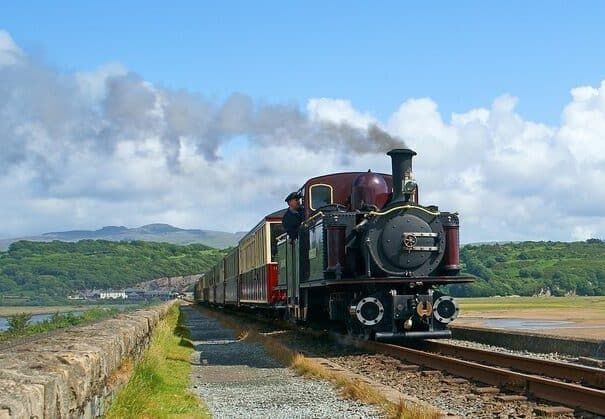

Ffestiniog Railway
Truly one of the best ‘Great Little Railways’ of Wales and officially the oldest operating independent railway company in the World! The Ffestiniog Railway still operates three of their original steam locomotives, which are over 150 years old – and offers you an unrivalled journey back into the golden age of rail travel. This two foot gauge railway opened originally in 1836 and is a 13 ½ mile journey from the coast at Porthmadog to the slate-quarrying town of Blaenau Ffestiniog. The train journey climbs over 700 feet up into the mountains and provides beautiful scenic views of the Snowdonia National Park.